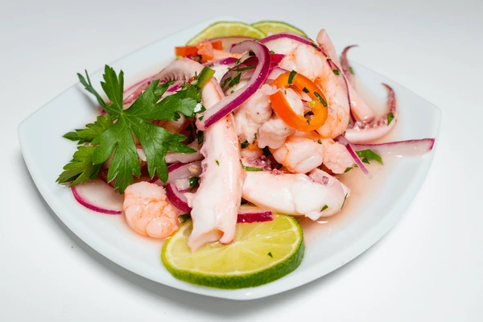

Ceviche Tropical
Fresh catch marinated in citrus with tropical fruits

Caribbean Freshness in Every Bite
Our Ceviche Tropical showcases the finest white fish from Barranquilla's morning catch, marinated to perfection in fresh lime and lemon juice. Enhanced with sweet mango, crisp red onion, and aromatic cilantro, this dish represents the perfect balance between traditional coastal technique and tropical innovation. Served chilled with crispy plantain chips for the ultimate Caribbean experience.
Premium Ingredients
- Fresh corvina or sea bass (300g)
- Hand-squeezed citrus juice blend
- Ripe tropical mango chunks
- Fresh cilantro and red onion
- Ají dulce peppers
Perfect Pairings
- Sauvignon Blanc - Enhances citrus notes
- Light lager beer - Coastal classic
- Fresh lemonade - Tropical refreshment
Dietary Information
Allergens: Fish, Citrus
Options: Gluten-free, Dairy-free
Calories: 245 kcal
Protein: 32g
Chef's Note
"The key to perfect ceviche is timing and temperature. We marinate our fish for exactly 12 minutes to achieve that tender texture while maintaining its natural sweetness. The tropical mango adds a unique Caribbean twist to this Peruvian classic."
Origin & Tradition
While ceviche originated in Peru, our tropical version celebrates Barranquilla's abundant seafood and tropical fruits. This fusion represents the culinary exchange between Pacific and Caribbean cultures, creating something uniquely Colombian coastal.